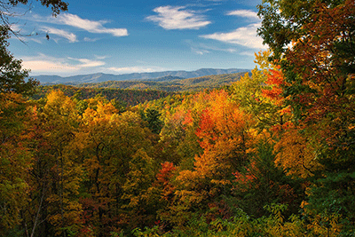
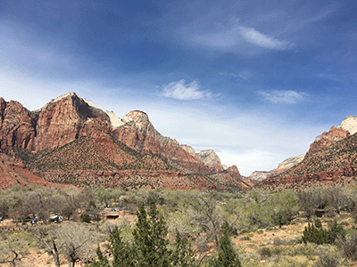
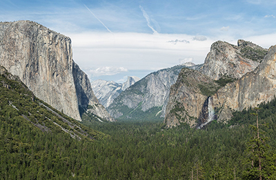

While the National Parks welcomed 331.9 million visitors in 2024, some parks are visited more frequently than others. Iconic destinations draw millions of travelers each year because of their landmarks and easy access. Meanwhile, lesser-known parks offer equally stunning landscapes and history but remain much less crowded. Understanding which parks are most frequently visited can help you plan your trip accordingly. Whether you’re in search of stunning views or hoping to escape the crowds and discover a quieter part of the National Park System, there is a destination for you.
Although every park offers a diverse and unique experience, year after year, these six consistently rank as the most visited in the country:
Established in 1926, Great Smoky Mountains National Park is made up of a series of ridges and forests on the border of North Carolina and Tennessee. Called the Great Smoky Mountains because of its consistent morning fog, this mountain range is known for its diversity of plant and animal life, the beauty of its mountain ranges, and its history of southern Appalachian mountain culture. With over 800 miles of maintained hiking trails and 150 official trails, the park offers many opportunities for hikes that range from short, accessible walks to strenuous, all-day hikes. The park also offers more than 2,900 miles of streams, all of which can be fished in, as well as over 90 historic structures that are preserved within the park. Some of the park’s key features are Mount LeConte, the Mountain Farm Museum, Laurel Falls, Cataloochee Valley, and Chimney Tops Trail.

Established in 1919, Zion National Park is located in Southwestern Utah, and is a 229 square mile protected area, most famous for its sandstone cliffs and deep canyons. The park also features the 15 mile long Zion Canyon, carved out by the Virgin River. The park’s ecosystem is home to about 800 native plant species, including more flowers than anywhere else in Utah. Some of the most popular activities at Zion include hiking, with over 35 trails, rock climbing, canyoneering, horseback riding, and birdwatching, especially for those on the lookout for the California condors. Many of Zion’s key features are a number of hikes, including The Narrows, The Subway, Angels Landing, Emerald Pools, and Weeping Rock.

Established in 1919, the Grand Canyon is located in the northwestern part of Arizona. There are two areas of Grand Canyon National Park, the North and South Rims. At 7,000 feet above sea level, the Grand Canyon South Rim is the most accessible section of the national park, with a number of places where visitors can pull over to admire views. The Grand Canyon North Rim, 8,000 feet above sea level, is more difficult to get to, especially during the winter. By car, the trip from one rim to the other is 220 miles. The Grand Canyon encompasses canyons and river tributaries, and some of the park’s most popular activities include rim hiking, mule rides, and whitewater rafting. Some of the Grand Canyon’s key features include Bright Angel Trail, South Kaibab Trail, Rim Trail, Mather Point, and the Grand Canyon Desert View Watchtower.

Established in 1872 and located primarily in Wyoming, Yellowstone National Park was the first national park in the United States. The park spans almost 3,500 miles and extends into parts of Montana and Idaho, making it one of the largest national parks in the United States. Yellowstone is located on top of a dormant volcano and is home to more geysers and hot springs than anywhere else in the world. Yellowstone is home to a diverse group of animals, including grizzly bears, wolves, and the largest buffalo herd in the country. Additionally, about 50% of the world’s hydrothermal features are at Yellowstone National Park, which causes an effect that makes the ground look like it is on fire. Some of Yellowstone’s key features include Old Faithful Geyser, Grand Prismatic Spring, and Grand Canyon of the Yellowstone.

Established in 1915 and located right outside of Estes Park, Colorado, Rocky Mountain National Park is filled with mountains, glaciers, and lakes. With elevations ranging from 8,000 feet in the wet, grassy valleys to over 14,000 feet at the mountain peaks, there are countless experiences and adventures for visitors to embark on. Each season brings something special to the Rocky Mountains. In summer, especially June and July, wildflowers cover the meadows in vibrant color. Fall offers colorful foliage and the chance to witness elks during their mating season, while winter turns the landscape into a stunning snow-covered wonderland. In the park, visitors can partake in mountain climbing, hiking, camping, and fishing. Some of Rocky Mountain National Park’s key features include Trail Ridge Road, Bear Lake, Emerald Lake, Sprague Lake, and Alluvial Fan.

Established in 1890 and located in central California, Yosemite set the precedent for all future national parks. With almost 95% of the park’s 747,000 acres classified as wilderness, the park is home to some of the best views and hiking trails in the country. Yosemite National Park’s Valley is a 7 mile wide canyon with many rock formations, such as El Capitan, which is the world’s tallest granite monolith and one of the top rock climbing destinations in the world. The park is also home to Yosemite Falls, the largest waterfall in North America, and Giant Sequoia trees, which are estimated to be about 3,000 years old. At the park, visitors can participate in activities such as hiking, rafting and biking. Some of Yosemite’s key features include Yosemite Falls, El Capitan, Bridalveil Falls, Cloud’s Rest, and Glacier Point.
